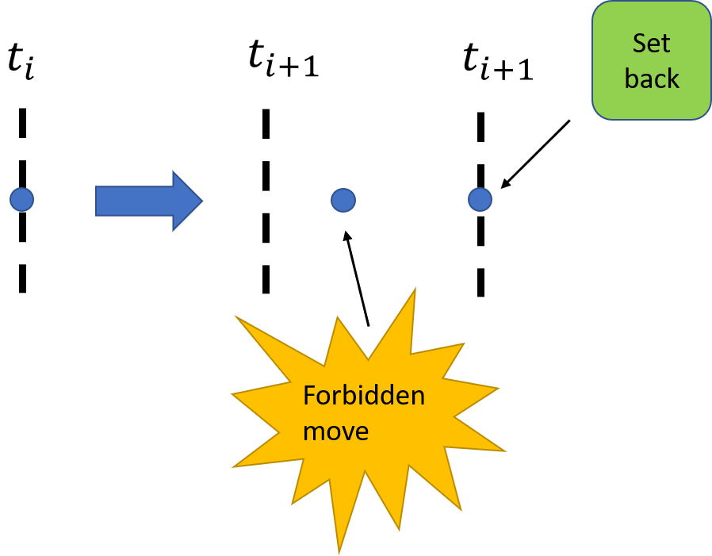

Introduction
In this project you are going to gain further insight into how diseases spread. Previously, you used continuous compartment models, which were based on the assumption that every individual in a population interacts with everyone else in the same way, and where the simulated outcomes were completely determined by model input. While these models capture key aspects of real data, it is obvious that they are not very realistic. As an alternative to the deterministic approach, you are in this project going to apply Monte Carlo (MC) techniques. This allows you to easily incorporate mechanisms for how diseases spread, and to account for chance events that may be important, especially near the beginning of a disease outbreak.
Key parameters in the compartment model approach were the effective rate of infection, \( \beta \), and the infection recovery rate, \( \gamma \) (or kill rate, \( \alpha \), for the zombie scenario). Together these two parameters yielded the basic reproduction number \( \mathcal{R}_0 \), which is a measure of whether the disease is able to spread in the population. In project 3, it was simply assumed that \( \beta \) should decline exponentially as a function of time, eventually putting an end to the epidemic. However, it is certainly not clear why this should happen, if at all. For the particular case of the 2014 Ebola virus outbreak in Liberia, researchers actually estimated that \( \mathcal{R}_0 \) were constant for several months following the initial outbreak [1]. Similarly, the Corona virus has not stopped infecting new hosts almost a year after it first became known; in fact, there have been several waves of disease transmission. Understanding the mechanisms responsible for changes in \( \beta \) and \( \gamma \) are therefore very important when faced with a potential epidemic.
In this project, you are going to model how a disease spreads in a population by explicitly tracking each individual. Interactions between sick and healthy people will be described by a random walk [2] [3]. In this way you can easily test the impact of various model assumptions, and predict how they affect the effective values for \( \beta \) and \( \gamma \) in the compartment model approach.
For the above reasons, you should think very carefully about how you design your code in this project! It is also important that you include sufficient documentation in the form of class and function docstrings, as well as clarifying comments for more difficult parts of your code.
Coding tips are presented in the Appendix, to help you get you started. It is strongly recommended that you read the Appendix before starting to work on the project, even if you in the end choose to adopt your own strategy.
Exercise 1: Implement a random walk disease model
Consider a population of individuals that are confined to a finite, rectangular lattice with \( n_x\times{n_y} \) equally spaced nodes. This could for example represent an isolated island, or a city surrounded by walls. Each node represents a specific location, and during a simulation people move randomly from place to place . At any given time, each person is assigned a certain disease status: "Susceptible" (healthy), "Exposed", "Infectious", "Immune", "Dead", etc. As time goes by, people will change status depending on whom they meet, but also partly due to chance.
This part will be the basis for the rest of the project. To start out simple, we assume that there are only two possible disease states (compartments):
- Susceptible (S): Healthy persons who stand the chance of becoming sick.
- Infectious (I): People that have the disease, and are contagious to others.
- The walkers are assumed to move randomly (i.e., with a 25 percent chance) in one of the following four directions: North, South, East, or West. That is, walker goes either in the x-direction or in the y-direction, but not both at the same time.
- At the end of a time step, after having moved each walker, check for new infections.
- Every infectious individual will have the same probability, \( q \), of infecting each susceptible person present at the same location. Go through each S-I pair in turn, and update the status of each newly infected person from \( S \) to \( I \).
Figure 1: Example illustration of walkers moving on a lattice. In the plot, \( q \) is the probability that a walker is infected.

The code you develop in this part will continue being used, and extended, in later exercises. Your final program should be able to perform at least the following steps:
-
reset_model: set correct values for all model parameters at \( t=0 \). This includes assigning a starting location for each walker. -
move_walkers: Move all walkers a single step. -
revert_illegal_moves: For each move that was actually illegal, go back. To be able to do so, you must have temporarily stored the old positions. -
collide: check for new infections, whether previously infected individuals become contagious (if including a latent period), if an infected person becomes immune or dies etc. Update the current state accordingly. -
plot_current_state: visualize walker positions, and/or selected summary statistics (total number of infectious, recovered, dead, etc.). This is very useful for debugging. However, you should not automatically plot every time step, only selected ones specified by the user. -
save_current_state: Save (selected) information about the current state for later retrieval (also useful for debugging, and needed for doing statistics). At the very least, you need to record how many people there are in each "disease compartment" at each time step. -
simulate: Top-level function that organizes a full simulation from start to finish (using the other steps).
Part 1. Let \( n_x=n_y=50 \) and \( q=0.9 \). Let the total population size be \( N=683 \), and suppose that there is a single infectious individual initially.
- Run the walk model forward in time, about 300 steps. At each time make a time series that holds the total number of healthy (S) and sick (I) people in the population.
- Plot the number of healthy and sick people in the population over time, and comment on the results
Exercise 2: Comparison with deterministic SI-model
Part 1. Again, let \( n_x=n_y=50 \) and \( q=0.9 \), and \( N=682 \), suppose that there is a single infectious individual initially.
- Run the 2-compartment random walk model forward in time repeatedly (at least) 100 times, each time taking 300 steps. (If your code is fast you can run more times and longer if necessary)
- For each time step, calculate 1) the sample mean and 2) the sample standard deviation of the number of healthy (S) and sick (I) people in the population.
- Create a figure showing the expected time development of the two populations. Make sure to include the computed uncertainty in the plot.
matplotlib.
x or results2 is almost always a bad name).
Part 2.
- Repeat the exercise when there are 10 infectious people initially.
- What is different now?
- Try to compare the results from the previous two exercises with the \( SZ \)-model used in Project 3 (use the analytical solution).
- Specifically, can you find a \( \beta(t) \) function that approximately describes the mean number of infectious people as a function of time?
Exercise 3: Estimating parameters, and incorporating age classes
Part 1. Our original \( SI \)-model was $$ \begin{align} \tag{2} \frac{\mathrm{d}S(t)}{\mathrm{d}t}&=-\beta(t)\cdot\frac{S(t)I(t)}{N} \,, \\ \tag{3} \frac{\mathrm{d}I(t)}{\mathrm{d}t}&=\beta(t)\cdot\frac{S(t)I(t)}{N} \,. \end{align} $$ In this model, \( \beta(t) \) was input to the model. In the random walk model we can estimate values for \( \beta \) based on observed changes in the random walker population. To do this, we combine equation (2) with a first order approximation of the derivative to yield: $$ \begin{equation} \beta\cdot\Delta t \approx -\frac{(S(t)-S(t-\Delta t))N}{S(t)I(t)}, \tag{4} \end{equation} $$ Use the formula above to estimate \( \beta\cdot\Delta t \) from your estimated numbers of healthy (\( S \)), and infected (\( I \)) at each time step.
- Estimate the mean and median of \( \beta \), how well do these values compare with your value for \( \beta \) in the previous exercise?
One implementation is to create an array age_class and let age_class[i] denote the age of person number \( i \).
For simplicity, you may assume that there are only two age classes, young and old people:
- Modify the
move_walkerspart of the algorithm so that old people only have a 20 percent chance of moving in each of the four directions. They also have a 20 percent chance of staying put. - Suppose the population is halfway split between young and old people. Is the disease likely to spread faster in one of the age groups?
- How does \( \beta \) change compared to when all walkers behaved in the same way?
Exercise 4: Implement your own scenario
For the final part of the project, you are going to suggest your own scenario. You are free to do almost whatever you like, but keep in mind that since there are infinitely many choices you could make, it is very important that you explain your assumptions carefully, both in the main text and in the code documentation (docstrings).
Below we have listed some suggestions for new features to include in the model:
- Add a latency period: a certain time interval between when an individual first becomes infected, and when that person actually becomes sick (i.e., contagious to others).
- Let people recover from the disease and become immune after a certain time (e.g., determined by introducing a mean infectious period, \( 1/\gamma \)).
- Allow some people to die from the disease.
- Introduce additional walls and/or inaccessible locations at certain times to simulate effects of quarantine, then remove the barriers again after a while. The Hammer and Dance strategy, might be an inspiration.
- Distinguish between symptomatic and asymptomatic sick people. Use different infection probabilities for these two classes of individuals.
- If including asymptomatics, you might also want to add an incubation period: the time it takes from becoming infected to start showing symptoms (the person is still infectious from the get go)
- Establish a safe zone in one part of the lattice, i.e., an area in which only disease-free people are allowed to enter. This could represent, e.g., a hospital or a safe zone. However, if you also include asymptomatic people, these might not be detected in time....
- Include vaccination, possibly starting at some late time \( t>0 \).
- Add the option that a healthy person will have a higher probability of moving away from a location that already contains many sick people.
- "Party people" (or "stalkers?"): people who do not care about, or are oblivious to, the disease. They tend to go to where there are a lot of people already.
- (Probably quite difficult) Allow disease transmission to take place on a more general network, instead of on a regular 2D grid. Include movements, temporary and/or permanent, between both near and distant locations (e.g., to represent airline travel).
- Run simulations and plot results in one or more figures.
- Discuss your findings (remember to account for uncertainty)
- In particular, can you relate your findings to actual data for the Corona virus? (choose one or more countries, regions, cities etc.)
Appendix A: Suggested Python class implementation
As in project 2, we strongly recommend creating a single "simulator class" that is responsible for running your model(s) from start to finish. This allows different class functions to re-use the same variables, instead of having to pass them around all the time. At the same time, you avoid using global variables defined outside of the class, which can be a source of hard-to-find bugs, and can make your program hard to understand.
Furthermore, when using the class approach it becomes very easy to start up separate simulation runs, using either identical or variable model input parameters, which will be needed for this project.
Below is a suggestion for how you may start writing the __init__ method of
such a class:
class RandomWalkEpidemicSimulator:
"""
Class used to model the spreading of a contagious disease in a
population of individuals with a 2D random walk.
Each walker has a disease status which is represented by an
integer Enum. Also, a set of integer (x, y)-coordinates are
stored for each walker. The possible coordinates are:
{0, 1, ..., Lx-1} in the x-direction
{0, 1, ..., Ly-1} in the y-direction
It is only possible to move North, South, East, or West. If a
walker attempts to move outside of the physical domain, nothing
happens (i.e., a "bounce-back boundary condition" is enforced).
"""
def __init__(self,
population_size,
no_init_infected=1,
nx=50,
ny=50,
q=0.9):
"""
:param population_size: The total number of people (N).
:param no_init_infected: The number of infected people at t=0.
:param nx: The number of lattice nodes in the x-direction
:param ny: The number of lattice nodes in the y-direction.
:param q: The probability of infection (0 <= q <= 1).
"""
self.N_ = population_size
self.I0_= no_initially_infected
self.nx_= nx
self.ny_= ny
self.infection_probability_ = q
As you work through the project, you will gradually add more content to the class;
inside the __init__ function as well as in other functions.
Next, we will give you some concrete suggestions on how to implement your simulator.
Position of Walkers
We need to know where the walkers are located at all times. For this we suggest using a single 2D array to store the \( (x,y) \)-coordinates of all walkers. To generate random starting positions, we simply draw one \( x \)-coordinate and one \( y \)-coordinate for each walker:
self.Walkers_ = np.random.randint(0,
[self.nx_, self.ny_],
size=(self.N_, 2))
To understand what the code does, choose some small values for \( n_x \), \( n_y \), and \( N \), and inspect the result.
Plot the current state (show walkers)
Implement a function that makes a scatter plot of where the walkers are on the map. Use different colors for the different disease states (susceptible, infectious, recovered, dead, etc.). Make a black line where there are walls.
This extremely useful for debugging. For instance, by doing so you will easily see whether walkers have moved outside of the domain (should not happen!) Also, it is important to see if your code manages to locate all infectious people.
Move walkers
It is important that the walkers move at random, and only one step in either the \( x \)- or the \( y \)-direction. There are many ways to achieve this. One method is to draw a random integer \( u \) between 1 and 4, and to say, e.g.:
- If
u==1, move East: add \( [1, 0] \) to \( (x, y) \)-coordinates, - If
u==2, move North: add \( [0, 1] \), - If
u==3, move West: add \( [-1, 0] \), - If
u==4, move South: add \( [0, -1] \).
next_steps = np.array([[0,1], [1,0], [1,0], [0,1], [-1,0]])
We can then update the position of all walkers simultaneously as follows:
self.Walkers_ += next_steps
Revert illegal moves (Bounce-back condition)
We need to make sure that none of the walkers move outside the grid, or go into any other illegal location. One way of achieving this is to always keep track of the old (legal) positions:
self.Walkers_Old_ = self.Walkers_.copy()
Note the use of copy() here. If we write
self.Walkers_Old_ = self.Walkers_, it would not work, because arrays are
mutable
objects in Python.
This means that if Walkers_ had been assigned directly to Walkers_Old,
both variable names would point to the same underlying object in memory.
Since the arrays contain objects of an immutable type (int), one way to avoid
this problem is to create a shallow copy with copy(). In yet other applications,
a deepcopy() operation might
be needed.
To correct for walkers that have moved outside of the simulation domain, the most obvious thing to do is to loop over the position of each walker and check, in turn, whether that walker is at a legal position. If not, go back to the old coordinates; this is often called a bounce-back boundary condition. E.g., we could write code like this:
# Note:
# Assuming we have made a function "is_at_illegal_position" that
# checks whether the coordinates of a given walker is valid.
for idx in range(self.N_):
if self.is_at_illegal_position(idx):
self.Walkers_[idx] = self.Walkers_Old_[idx]
# Remember to save the new positions for the next time step
self.Walkers_Old_ = self.Walkers_.copy()
Note that this method is likely to be very slow, so instead you might want to use boolean masking to check the position of each walker in one go (that is, without using for loops). See Appendix B for more details.
Figure 2: An illustration of the bounce-back boundary condition, the wall is located to the east, and a move in the east direction is illegal.

State of Walkers
We still have no information about what type (susceptible, infected, recovered, dead, etc.) the individual walkers are. To represent the possible states, we suggest defining a set on named integer constants. These could for example be members of the simulator class (either class attributes or instance attributes), e.g.:
self.SUSCEPTIBLE_ = 0
self.INFECTIOUS_ = 1
self.RECOVERED_ = 2
self.DEAD_ = 3
Alternatively, they could be stored in a separate enumeration class:
from enum import Enum
class DiseaseStatus(Enum):
SUSCEPTIBLE = 0
INFECTIOUS = 1
RECOVERED = 2
DEAD = 3
The following example shows how you can use this kind of approach in your code:
# First, let all walkers be in the susceptible compartment:
self.State_ = np.full(self.N_, self.SUSCEPTIBLE_)
# Next, change walker number 0, 1, 2, ..., I0-1 to be infectious:
self.State_[0:self.I0_] = self.INFECTED_
As the simulation is progressing, the State_ array will be continually updated.
At any given time, we can count the total number of infected, recovered, dead etc.
by
no_susceptible = np.sum(self.State_ == self.SUSCEPTIBLE_)
no_infectious = np.sum(self.State_ == self.INFECTIOUS_)
no_dead = np.sum(self.State_ == self.DEAD_)
Note that the code becomes so much easier to read than if you had used
hard-coded integers everywhere in your code. Then, you would have to always
remember that 0=SUSCEPTIBLE and 1=INFECTIOUS etc.,
which is obviously not very readable, as well as error prone.
Furthermore, this approach lends itself very easily to adding more compartments,
or changing the numbering scheme later on. For instance, suppose you want to
use to the following numbering instead:
self.SUSCEPTIBLE_ = 0
self.EXPOSED_ = 1
self.INFECTIOUS_ = 2
self.RECOVERED_ = 3
self.DEAD_ = 4
Here, the EXPOSED compartment represents individuals that have been
infected, but are not yet contagious to others. Note that if you wrote your
code referring directly to numbers, you would have to change each
occurrence of 1 to 2. This could quickly lead to bugs in your code.
Appendix B: Tips on how to speed up your code
A good rule is to never optimize code too early. First get the code to work, then you can spend time replacing part of the code that is too slow.
- It is important to avoid loops whenever possible. For instance, drawing random numbers one at a time inside a loop tends to be very slow:
for k in range(0, N):
x = np.random.uniform(0, d)
y = np.random.uniform(0, d)
Instead, take advantage of built-in functionality in Numpy to draw all the numbers at once:
x = np.random.uniform(0, d, size=N)
y = np.random.uniform(0, d, size=N)
- When locating walkers at illegal positions, or finding positions where infectious and susceptible individuals meet (this step is crucial for speed!), consider using numpy.where.
- You can also use boolean masking, for example:
# too_large_x[i] == True iff walker i has moved too far to the right
too_large_x = self.Walkers_[:, 0] > self.nx_
# too_small_x[i] == True iff walker i has moved too far to the left
too_small_x = self.Walkers_[:, 0] < 0
wrong_x = too_large_x | too_small_x # boolean "OR" applied elementwise
- Another example: Suppose we have marked the illegal positions in a array called
at_illegal_pos. Then, we can simply correct illegal moves by typing
# at_illegal_pos[i]==True iff walker no. i is at an illegal position
self.Walkers_[at_illegal_pos] = self.Walkers_Old_[at_illegal_pos]
- Numba translates python functions to optimized machine code, and might be something to look into.
- A final tip (that might prove wrong): While using classes can be good, avoid creating too many of them. It might be tempting to represent individual walkers with a class, but our guess is that this will slow down the code considerably unless one is very careful. Accessing a class and its members adds extra overhead.
Bibliography
- C. L. Althaus. Estimating the Reproduction Number of Ebola Virus (EBOV) During the 2014 Outbreak in West Africa, PLoS currents, 6, 2014.
- K. Pearson. The Problem of the Random Walk, Nature, 72(1867), pp. 342, 1905.
- E. A. Codling, M. J. Plank and S. Benhamou. Random Walk Models in Biology, Journal of the Royal society interface, 5(25), pp. 813-834, 2008.